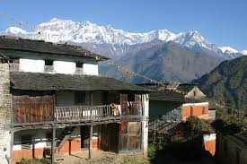
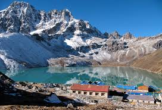

14737-susan-shrestha
Table of Contents
enter to skip to Introduction
enter to skip to formulas
enter to skip to mammals list
enter to skip to birds list
enter to skip to list of Nepali Prime ministers
enter to skip to Quote list
enter to skip to photo gallary
Introduction on software crisis
Development in software technology continues to be dynamic.New tools and technique are announced in quick succession.This has forced the software engineers and industry to continuously look for new approaches to hardware software design and development,and they are becoming more and more critical in view of increasing complexity of softwaresystem as well as the highly cpmpetitive nature of industry. These rapid advances appear to have created a situation of crisis within the industry.
(a+b)2=a2+2ab+b2
NaOH+HCl => NaCl + H2O
List of 5 mammals
- Dolphin
- Human
- tiger
- Elephant
- Rhino
Skip to top
List of 5 birds
- Peagon
- sparrow
- Kiwi
- Ostrich
- Parrot
Skip to top
List of Nepalese Prime Ministers from past to present
- Damodar Pande
- Bhimsen Thapa
- Rana Jang Pande
- Jang Bahadur Rana
- Bir Shamsher Jang Bahadur Rana
- Dev Shamsher Jang Bahadur Rana
- Chandra Shamsher Jang Bahadur Rana
- Bhim Shamsher Jang Bahadur Rana
- Juddha Shamsher Jang Bahadur Rana
- Padma Shamsher Jang Bahadur Rana
- Mohan Shamsher Jang Bahadur Rana
- Matrika Prasad Koirala
- Tanka Prasad Acharya
- Subarna Shamsher Rana
- Bishweshwar Prasad Koirala
- Tulsi Giri
- Surya Bahadur Thapa
- Nagendra Prasad Rijal
- Lokendra Bahadur Chand
- Marich Man Singh Shrestha
- Krishna Prasad Bhattarai
- Girija Prasad Koirala
- Man Mohan Adhikari
- Sher Bahadur Deuba
- Pushpa Kamal Dahal
- Madhav Kumar Nepal
- Jhala Nath Khanal
- Dr. Babu Ram Bhattarai
- Khil Raj Regmi
- Sushil Koirala
- K.P Sharma Oli
Skip to top
Quote List
- Quote
- Great things never come from comfort zone.
- Quote
- Great things never come from comfort zone.
- Quote
- Great things never come from comfort zone.
Skip to top
Image Gallary


Skip to top